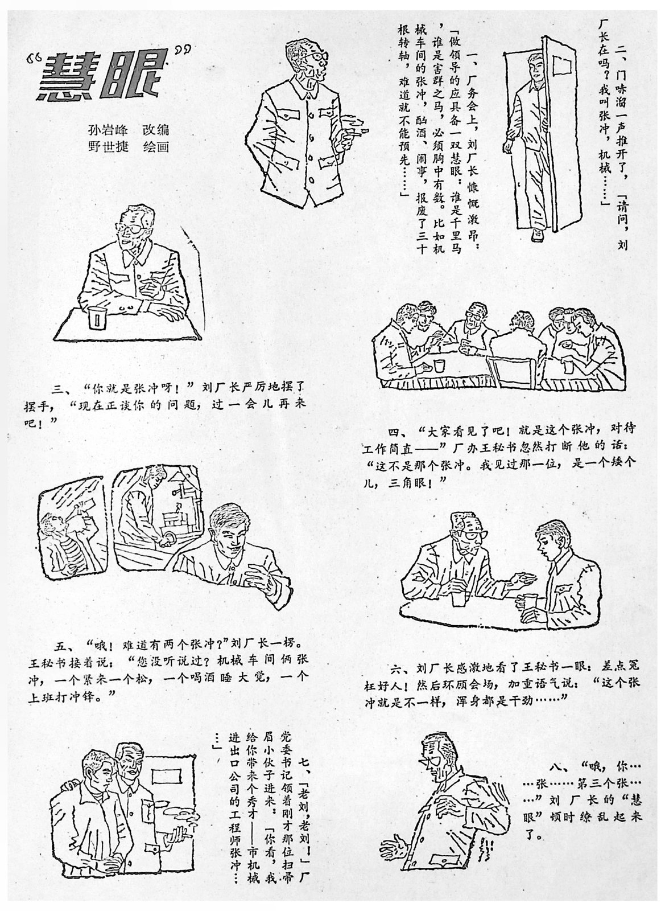

野世捷绘画；孙岩峰改编 《人事》1986年第3期（总第6期），封三
"慧眼"
"A Discerning Eye"
- Panel text
- 厂务会上，刘厂长慷慨激昂：「做领导的应具备一双慧眼：谁是千里马，谁是害群之马，必须胸中有数。比如机械车间的张冲，酗酒、闹事，报废了三十根转轴，难道就不能预先……」
At the factory affairs meeting, Director Liu held forth passionately: “A leader must have discerning eyes: he must know clearly who is a thousand-li horse and who is the black sheep. Take Zhang Chong of the machining shop — drinking, making trouble, he ruined thirty drive shafts. Couldn't we have foreseen…” - 门哧溜一声推开了，「请问，刘厂长在吗？我叫张冲，机械……」
The door slid open: “Excuse me, is Director Liu here? My name is Zhang Chong, from machin—…” - “你就是张冲呀！”刘厂长严厉地摆了摆手，“现在正谈你的问题，过一会儿再来吧！”
“So you're Zhang Chong!” Director Liu waved him off sternly. “We are discussing your problem right now. Come back later!” - “大家看见了吧！就是这个张冲，对待工作简直——”厂办王秘书忽然打断他的话：“这不是那个张冲。我见过那一位，是一个矮个儿，三角眼！”
“You all saw him! That's Zhang Chong — his attitude to work is simply—” Secretary Wang of the factory office suddenly cut in: “That's not the same Zhang Chong. I've seen the other one: short, with narrow triangular eyes!” - “哦！难道有两个张冲？”刘厂长一愣。王秘书接着说：“您没听说过？机械车间俩张冲，一个紧来一个松，一个喝酒睡大觉，一个上班打冲锋。”
“Oh! There are two Zhang Chongs?” Director Liu was taken aback. Secretary Wang went on: “Haven't you heard? The machining shop has two Zhang Chongs — one keen, one slack; one drinks and sleeps it off, the other charges into every shift.” - 刘厂长感激地看了王秘书一眼：差点冤枉好人！然后环顾会场，加重语气说：“这个张冲就是不一样，浑身都是干劲……”
Director Liu shot Secretary Wang a grateful look — he had nearly wronged a good man! Then, surveying the room, he said emphatically: “Now this Zhang Chong is different — full of drive from head to toe…” - 「老刘，老刘！」厂党委书记领着刚才那位扫帚眉小伙子进来：「你看，我给你带来个秀才——市机械进出口公司的工程师张冲……」
“Lao Liu, Lao Liu!” The factory Party secretary came in leading the bushy-browed young man from before: “Look, I've brought you a scholar — Zhang Chong, engineer with the city machinery import–export company…” - “哦，你……张……第三个张……”刘厂长的“慧眼”顿时缭乱起来了。
“Oh, you… Zhang… a third Zhang…” Director Liu's “discerning eyes” were suddenly dazzled.
- 厂务会上，刘厂长慷慨激昂：「做领导的应具备一双慧眼：谁是千里马，谁是害群之马，必须胸中有数。比如机械车间的张冲，酗酒、闹事，报废了三十根转轴，难道就不能预先……」
- Description
- Eight-panel picture story: a factory director proud of his eye for talent denounces a worker named Zhang Chong as a drunk — but there are several Zhang Chongs, and the one he dismissed is the engineer he has been asked to welcome.
- Artists
- Ye Shijie 野世捷 (drawn); Sun Yanfeng 孙岩峰 (adapted)
- Published in
- 《人事》1986年第3期（总第6期）, inside back cover
- Themes
- Talent and its neglect · Picture stories (连环画)

Cite
Ye Shijie and Sun Yanfeng, “"慧眼"” ["A Discerning Eye"], Renshi (Personnel) 《人事》, 1986, no. 3, inside back cover.